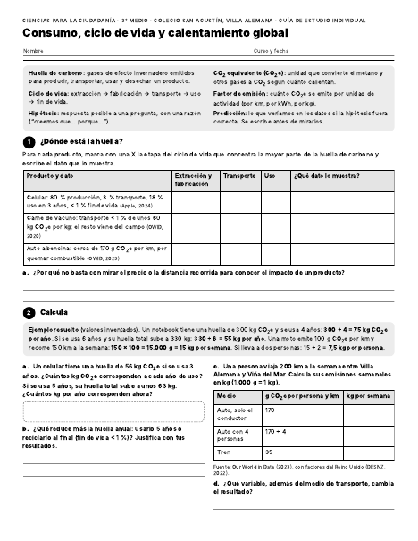
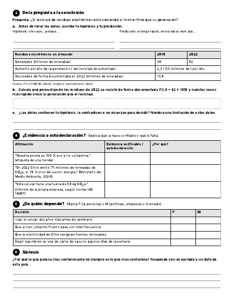

3° Medio · Ciencias para la Ciudadanía · Colegio San Agustín
Consumo, ciclo de vida y calentamiento global
Guía de estudio individual para repasar lo visto en la unidad: dónde se concentra la huella de carbono, cálculos con factores de emisión, de la pregunta a la conclusión, evidencia o autodeclaración, y qué depende de cada persona.
Guía de estudio
PDF de 2 planas, en blanco y negro. Se trabaja sin celular: todos los datos están en la guía.


Presentación de apoyo
PowerPoint de 9 diapositivas con las instrucciones generales y un ejemplo resuelto para cada sección de la guía.
- Cómo trabajamos y cinco ideas clave
- ¿Dónde está la huella? (ejemplo de una polera)
- Huella por año y de gramos por km a kg por semana
- De la pregunta a la conclusión (bus o auto)
- ¿Evidencia o autodeclaración? · ¿De quién depende? · Síntesis
Los ejemplos de la presentación usan otros casos para no adelantar las respuestas de la guía. Los datos de la guía tienen fuente y año: Apple (2024), Our World in Data (2020, 2023), ITU y UNITAR (2024) y Ministerio del Medio Ambiente (2024).